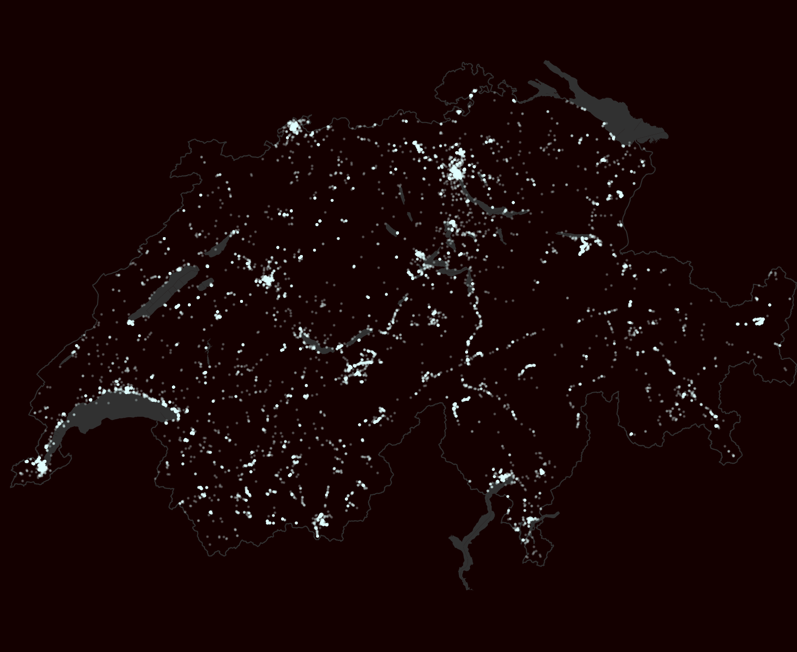

Flickr pictures in Switzerland
Location of all pictures geolocalised in Switzerland and uploaded to flickr between 2014-01-01 and 2016-07-14 (22'433 pictures)

Population density by Swiss municipalities
Swiss municipalities coloured according to their population density. The 5 largest agglomerations and their total population are shown
Source: flickr, Swiss Federal Statistical Office & swisstopo | swissinfo.ch | @duc_qn